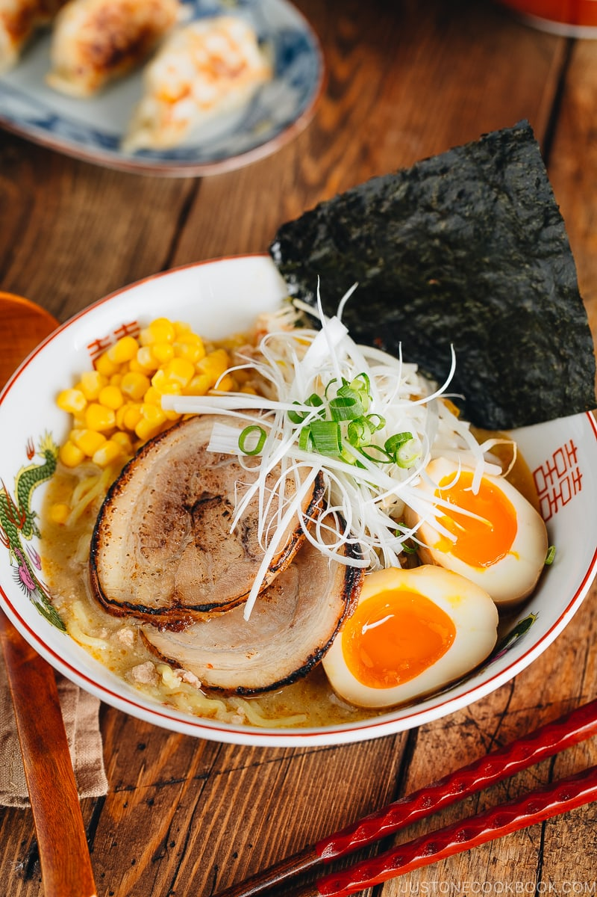

Miso Ramen

Description
Ramen is one of the quintessential Japanese dishes. The flavourful soup and toppings leave you wanting for more with each bite you take. With this recipe, you will be able to prepare this delicacy in the comforts of your own home!
Ingredients
- Garlic - 2 cloves
- Grated ginger - 1/2 tsp
- Shallot - 1
- Toasted white sesame seeds - 1 Tbsp
- Toasted sesame oil - 1 Tbsp
- Ground pork - 1/4 lb
- Doubanjiang - 1 tsp
- Miso - 3 Tbsp
- Sugar - 1 Tbsp
- Sake - 1 Tbsp
- Chicken stock - 4 cups
- Kosher salt - 1 tsp
- White pepper powder - 1/4 tsp
- Fresh ramen noodles - 2 servings
- Homemade chashu (optional)
- Spicy bean sprout salad (optional)
- Ajitsuke tamago (optional)
- Frozen or canned corn (optional)
- Nori - 1 sheet cut into quarters (optional)
- Green onion - chopped (optional)
- Shiraga negi (optional)
- La-yu (optional)
- Pickled red ginger (optional)
Steps
- Prepare the toppings ahead of time. Chashu and ajitsuke tamago should be prepared 1 day in advance.
- Mince or press 2 cloves of garlic and add to a small plate.
- Add 1/2 tsp of grated ginger to the same plate.
- Mince 1 shallot and add to the same plate, then set this plate aside.
- Grind 1 Tbsp of toasted white sesame seeds, leaving some seeds unground for texture. Set aside.
- Preheat a medium pot over medium-low heat. When it's hot, add 1 Tbsp of toasted sesame oil, followed by the garlic, ginger and shallot.
- Using a wooden spatula, stir-fry until it is fragrant.
- Add 1/4 lb of ground pork and increase the heat to medium. Cook the meat until it's no longer pink.
- Add 1 tsp of doubanjiang and 3 Tbsp of miso. Quickly blend well with the meat before they get burnt.
- Add the ground sesame seeds and 1 Tbsp of sugar. Mix well.
- Add 1 Tbsp of sake and 4 cups of chicken stock. Bring the mixture to a simmer.
- Taste the soup and if necessary, add 1 tsp of kosher salt. Then, add 1/4 tsp of white pepper powder.
- Cover the soup broth with the lid and let it simmer.
- Bring a large pot of unsalted water to a boil. Once it is boiling, ladle some of the hot water into the individual ramen bowls to warm them up. Meanwhile, gently shake 2 servings of fresh ramen noodles with your hand to separate and loosen them up.
- Cook the noodles according to the package instructions. Before the noodles are done, empty the hot water from the warmed ramen bowls.
- When the noodles are done, quickly pick them up with a mesh seive and shake out the excess water. This is to avoid diluting the soup. Serve the noodles into the warmed bowls.
- Add the piping-hot ramen soup broth to each bowl.
- Place the toppings of your choice on the ramen noodles and serve immediately. Add the optional condiments to your ramen and enjoy.